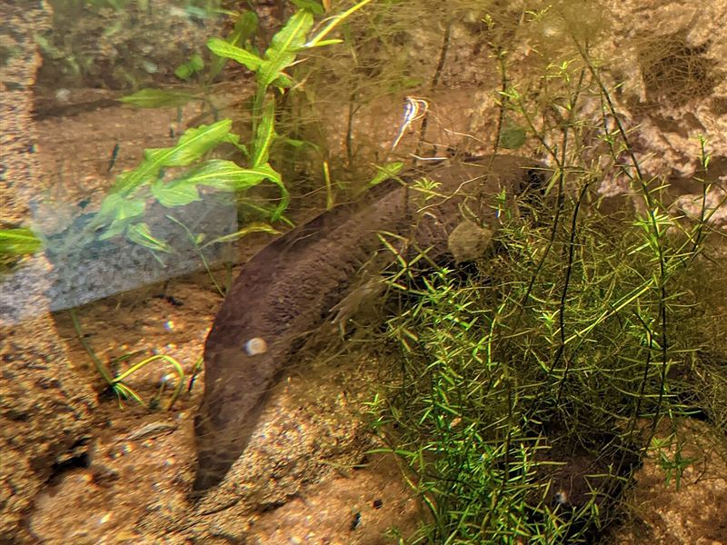

CR · En peligro críticoAjolote
Ambystoma mexicanum 📍 Xochimilco (México)Saber más
Anfibio que conserva toda su vida el aspecto de larva y puede regenerar patas, cola e incluso partes del corazón. En libertad solo vive en los canales de Xochimilco.
- Contaminación del agua
- Pérdida de los canales de Xochimilco
- Especies invasoras (carpas y tilapias)
Foto: FakirNL · CC BY-SA 4.0